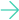

<div class="full-pop-up-window">
  <div class="pop-up-window">
    <div class="left-container">
      <h2>01</h2>
      <p class="project-name">{{ popupProject?.projectName }}</p>
      <p class="about-project">What is this project about?</p>
      <p class="description">
        Task manager inspired by the Kanban System. Create and organize tasks
        using drag and drop functions, assign users and categories.
      </p>
      <div class="technologies">
        @for(tech of popupProject?.technologyUsed; track tech){
        <div>
          
          <p>{{ tech.technology }}</p>
        </div>
        }
      </div>
      <div>
        <button>
          GitHub
          
        </button>
        <button>
          LiveTest
          
        </button>
      </div>
    </div>
    <div class="right-container">
      <div (click)="closePopUp()" class="close">
        
      </div>
      
      <div class="next-project">
        <p>Next project</p>
        
      </div>
    </div>
  </div>
</div>
